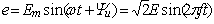

Задание 3. Измерить индуктивность катушки и ёмкость конденсатора косвенным методом по результатам прямых измерений напряжений, токов и мощностей ветвей и косвенных измерений углов сдвига фаз φk.
С этой целью собрать на рабочем поле программы EWB схему цепи (см. рис. 1.4) или схему цепи (см. рис. 1.5) на рабочем поле программы MS8 Education (либо открыть файл Lr1-3.ewb. при выполнении работы в среде EWB или файл Lr1-3.ms8 при выполнении работы в среде MS8SD) и установить:
- параметры идеального источника синусоидального напряжения действующее значение ЭДС Е = 5 + N, В; частоту f = 1000 Гц при измерении индуктивности L катушки и частоту f = 10000 Гц при измерении ёмкости C конденсатора; начальную фазу напряжения Ψu = 0;
- режим работы DС вольтметра Wt (RWt = 1 MОм), режим работы АС амперметра А1 (RА = 1 мОм)) и вольтметра V2 (RV2 = 1 MОм);
- значения сопротивления резистора R1 = 20 Ом (имитирующего активное сопротивление катушки) и резистора R2 = 10 Ом;
- значение индуктивности катушки L = 5 + int(N/5), мГн и ёмкости конденсатора С = 1 + int(N/10), мкФ;
- чувствительность 200 мВ/дел (mV/div) канала А осциллографа, в котором регистрируется напряжение, снимаемое с ИТУН; чувствительность 5 или 10 B/дел (V/div) канала В, в котором регистрируется напряжение ветвей схемы; длительность развертки (TIME BASE) в режиме Y/T - 0,2 мс/дел (2 ms/div). Указанные цены делений нужно изменять при измерениях таким образом, чтобы амплитуды напряжения и "тока" были равны не менее 0,5..0,75 высоты экрана осциллографа (в режиме Espand), а по оси времени укладывалось два-три периода колебаний исследуемых величин;
- управляющую ключом кнопку S клавиатуры;
- значение коэффициента передачи ИТУН k = 1 Ом;
- красный цвет провода, подходящего к каналу А осциллографа, и синий для провода, подходящего к каналу В осциллографа;
- установить управляемый контакт кнопки S в нижнее положение, т. е. подключить R1L-ветвь к источнику е.
Запустить программу EWB (щёлкнуть мышью на цифре 1 кнопки ), снять показания приборов и занести их в табл. 1.2. Методика определения угла сдвига фаз ( между напряжением и током описана в п. 2.4 раздела "Теоретические положения и расчетные формулы". Для удобства измерений изменяйте чувствительность каналов и длительность развёртки осциллографа. Убедится, что ток i1 в R1L-ветви отстаёт по фазе от напряжения u на угол φ1 = arctg(XL/R1) = arсcos(P1/UI1), где Р1 – показание ваттметра.
Установить частоту ЭДС f = 10 кГц источника е и подключить R2С-ветвь (нажать кнопку S) к источнику. Показания приборов записать в табл. 1.2. Убедится, что ток i2 в R2С-ветви опережает по фазе напряжение u на угол φ2 = arctg(-XC/R2) = -arсcos(P2/UI2), где Р2 – показание ваттметра.
Рассчитать полное Z = U/I, активное R = Zcosφ и реактивное X = Zsinφ сопротивления R1L-ветви и R2С-ветви и занести их в табл. 1.2.
Так как индуктивное сопротивление катушки XL = ωL = 2πfL, Ом, а ёмкостное сопротивление конденсатора XС = 1/ωС = 1/2πfC, Ом, то:
L = XL/ω = XL/2πf, Гн или L = 103XL/2πf, мГн - индуктивность катушки, включенной в R1L-ветвь;
С = 1/(ωXC ) = 1/(2πf•XC), Ф или С = 106/(2πf•XC), мкФ - ёмкость конденсатора, включенного в R2С-ветвь.
Таблица 1.2
Ветвь |
Установлено | Измерено | Вычислено | ||||||||
| E, B | f, кГц | U, B | I, мA | P = UWt, Bт | φ, град | Z, Ом | R, Ом | X, Ом | L, мГн | C, мкФ | |
| R1L | 1 | ----- | |||||||||
| R2C | 10 | ----- | |||||||||
Вычисленные значения индуктивности L катушки и емкости C конденсатора занести в табл. 1.2. Сравнить полученные значения R, L и С с установленными их значениями в схеме цепи.